Antes de dar el paso
Conocerse de verdad, hablar de lo que importa y discernir juntos un proyecto de vida.
¿Ahora, ahora… cómo están?
Novios y matrimonios · Presencial y virtual
Un espacio para novios y matrimonios: para conocerse, aprender a hablar y a discutir sin herirse, atravesar las crisis y volver a elegirse. Para la pareja, y para cada uno de los dos.
Para recorrer el sitio con calma, si quieren, con piano romántico instrumental.
¿Baladas latinas en piano? Buscar más listas en Spotify
De libre uso
Además del acompañamiento en consultorio, en este sitio hay materiales para usar en casa, de a dos, cuando quieran. Son gratuitos, no hace falta registrarse ni estar en terapia.
Acompañamiento de pareja
Toda pareja atraviesa momentos de encuentro y momentos de distancia. Pedir ayuda no es señal de fracaso: es una forma de cuidar lo que se eligió. Acompaño a novios que se preguntan por su proyecto, a matrimonios que quieren crecer y a parejas que atraviesan una crisis.
Conocerse de verdad, hablar de lo que importa y discernir juntos un proyecto de vida.
Cuidar la comunicación, la intimidad y el proyecto común en cada etapa de la vida.
Discusiones que se repiten, distancia, una infidelidad, un duelo. Un espacio para entender lo que pasa y decidir cómo seguir.
A veces consulta uno solo. Lo que cambia en uno también cambia el vínculo.
Desde un enfoque humanista e integrativo. La pareja no es la suma de dos personas: es un tercero que se construye entre ambos, con su historia, sus heridas y sus sueños. Trabajamos la comunicación, los patrones que se repiten, las historias familiares de cada uno, y también la pregunta por el sentido: para qué estamos juntos y hacia dónde vamos.
Encuentros de una hora aproximadamente, semanales o quincenales, presenciales en Rosario o virtuales por Meet. Empezamos con tres entrevistas iniciales para conocer qué los trae y, después, definimos juntos las metas y el camino.
Para novios, matrimonios y parejas que conviven, en cualquier etapa. Pueden venir juntos o empezar uno solo.
Consultar por WhatsAppSi en la relación hay violencia, miedo o amenazas, la prioridad es la seguridad. Más abajo encontrás los números de ayuda.
Noviazgo y discernimiento
El noviazgo es un tiempo para conocerse de verdad: no sólo lo que nos gusta del otro, también sus heridas, su historia, sus valores y sus sueños. Discernir juntos no es buscar a la persona perfecta, sino preguntarse si se quiere construir con esta persona un proyecto de vida.
El enamoramiento idealiza; el amor maduro conoce y elige. Ver al otro como es, con sus luces y sus sombras.
Hijos, dinero, trabajo, creencias, dónde vivir, cómo repartir las tareas. Lo que no se habla antes aparece después.
Ni por miedo a quedarse solo, ni por el «qué dirán», ni porque «ya es hora». Un sí libre es un sí más fuerte.
La boda dura un día; el matrimonio, toda la vida. Vale la pena prepararse para la convivencia, no sólo para la fiesta.
El psicólogo Robert Sternberg describió el amor con tres componentes: la intimidad (cercanía y confianza), la pasión (atracción y deseo) y el compromiso (la decisión de sostener el vínculo). En el noviazgo vale la pena mirar cómo está cada uno, y cuál necesita crecer.
Celos que controlan, aislamiento de amigos y familia, descalificaciones, miedo a decir lo que uno piensa. El amor no pide dejar de ser uno mismo. Si aparecen, conviene hablarlo con alguien de confianza.
«El amor no consiste en mirarse el uno al otro, sino en mirar juntos en la misma dirección» (Antoine de Saint-Exupéry).
Comunicación y conflictos
Todas las parejas discuten. Lo que marca la diferencia no es si hay conflictos, sino cómo se discute y, sobre todo, cómo se repara después. Una buena comunicación no se improvisa: se aprende.
No para responder ni para ganar. Repetir con tus palabras lo que entendiste antes de contestar.
Crítica, desprecio, actitud defensiva y retirada: según John Gottman, los cuatro patrones que más dañan a una pareja.
Pedir perdón, hacer una broma, tocar la mano. Los intentos de reparación son el pegamento de las parejas que duran.
Cuando la discusión sube de tono, conviene una pausa de veinte minutos y retomar con calma. No es huir: es cuidarse.
En lugar de «vos nunca me escuchás», decir «me siento solo cuando hablo y no me mirás; necesito que me prestes atención un rato». Describir el hecho, nombrar lo que siento y pedir algo concreto abre la puerta; el reproche la cierra.
Gottman observó que las parejas estables responden a las pequeñas «ofertas» del otro: un comentario, una mirada, una pregunta al pasar. Girarse hacia el otro en lo cotidiano construye la confianza que después sostiene los momentos difíciles.
Entre las parejas que se mantienen unidas, Gottman encontró unas cinco interacciones positivas por cada negativa, incluso en medio de un conflicto.
Etapas y crisis del matrimonio
El matrimonio no es un estado fijo: atraviesa etapas, y cada una pide algo nuevo. Las crisis no son necesariamente el final; muchas veces son el paso de una etapa a otra, una invitación a crecer y a volver a elegirse.
Pasar del yo al nosotros sin perderse: rutinas, tareas, tiempos propios y tiempos compartidos.
La pareja se vuelve también equipo de crianza. El desafío es no dejar de ser pareja en medio del cansancio.
Los hijos se van, el cuerpo cambia, aparecen preguntas por el sentido. Una oportunidad para reencontrarse.
Una infidelidad, una pérdida, una enfermedad, un desempleo. Hay crisis que rompen y crisis que, atravesadas, fortalecen.
La palabra crisis viene del griego krísis: decisión, separación, juicio. Una crisis obliga a mirar lo que ya no funciona y a decidir qué hacer con eso. Pedir ayuda a tiempo, antes de que el desgaste sea muy grande, cambia mucho el pronóstico.
El amor maduro no es el enamoramiento de los comienzos: es una decisión renovada. Cada etapa invita a preguntarse de nuevo «¿te sigo eligiendo?», y a cuidar lo que se eligió.
Si uno de los dos ya decidió separarse, el acompañamiento también puede ayudar a hacerlo con el menor daño posible, sobre todo si hay hijos.
Familias de origen
Cada uno llega a la pareja con su familia a cuestas: costumbres, mandatos, formas de expresar el cariño y el enojo, heridas sin cerrar. Formar una pareja es también hacer el paso de hijo o hija a esposo o esposa, sin romper con la propia historia.
La manera de discutir, de festejar, de manejar el dinero o de pasar los domingos suele venir de casa. Conocerla ayuda a elegir qué conservar.
Cuidar la relación con las familias sin que decidan por la pareja. El nosotros necesita su propio espacio.
«Los hombres no lloran», «el dinero no se habla», «las peleas se esconden». Mandatos que conviene revisar juntos.
A veces repetimos lo que juramos no repetir. Mirarlo con amor es el primer paso para elegir otra cosa.
Murray Bowen, pionero de la terapia familiar, llamó diferenciación a la capacidad de estar cerca de la propia familia sin quedar atrapado en sus emociones y mandatos. Una pareja sana necesita dos personas diferenciadas, que pueden estar unidas sin fusionarse.
Casi todas las tradiciones hablan de dejar al padre y a la madre para unirse al otro. No es abandonar a la familia de origen: es poner a la pareja en primer lugar, y desde ahí cuidar a todos.
Dibujar juntos el árbol de las dos familias (un genograma) suele abrir conversaciones muy valiosas.
Apego
Desde chicos aprendemos qué esperar cuando necesitamos cercanía: si el otro va a estar o si conviene arreglárnoslas solos. Ese aprendizaje se pone en juego sobre todo en la pareja. Conocer el estilo de cada uno no es ponerse una etiqueta: es entender por qué reaccionamos como reaccionamos cuando nos sentimos lejos, y aprender a pedir lo que necesitamos.
Me siento cómodo/a con la cercanía y con la distancia. Pido lo que necesito, pongo límites y vuelvo después de una pelea.
La distancia o la demora se viven como peligro. Busco confirmación, insisto o reclamo, y me cuesta calmarme hasta tener respuesta.
Me siento seguro/a en la independencia. Cuando la conversación se pone intensa, me alejo, minimizo o me encierro.
Deseo el vínculo y a la vez lo temo. Me acerco y me alejo, y a veces no entiendo bien lo que me pasa.
Un ansioso y un evitativo, dos ansiosos, dos evitativos: cada combinación tiene su baile. Conocerlo ayuda a no tomarlo como algo personal.
Debajo de muchas peleas está esa pregunta. Una pareja segura se construye estando accesible, respondiendo y comprometiéndose emocionalmente.
Hoy se entiende el apego adulto a partir de dos dimensiones: la ansiedad (miedo al abandono, necesidad de confirmación) y la evitación (incomodidad con la cercanía, preferencia por la autosuficiencia). Cada uno se ubica en algún punto de ese mapa, y puede vincularse distinto según la relación y el momento.
El estilo de apego no es un destino. Una relación confiable, conversaciones que reparan y, cuando hace falta, una terapia ayudan a construir lo que se llama seguridad ganada. La pareja puede volverse, para los dos, una base segura.
Para seguir: la guía Cómo nos vinculamos explica los cuatro estilos y el ciclo de persecución y retirada; la guía Lo que cada uno necesita ayuda a mirar las combinaciones y a armar un plan juntos. En Recursos están los carruseles.
Los estilos de apego describen tendencias, no diagnósticos. Si hay miedo, amenazas o violencia, no es un tema de apego: la prioridad es la seguridad (Línea 144, gratuita, las 24 horas).
Sexualidad e intimidad
La intimidad es mucho más que la sexualidad: es la confianza de mostrarse tal como uno es. La sexualidad es una forma de comunicación y de encuentro, que cambia con las etapas de la vida y necesita también cuidado, conversación y tiempo.
Contar lo que me pasa, lo que temo, lo que deseo, y sentir que el otro lo recibe con cuidado.
El deseo no es igual siempre ni en los dos. Hablarlo sin culpas ni reproches es parte del cuidado mutuo.
Cansancio, estrés, embarazo, enfermedad, edad: el cuerpo cambia y la sexualidad se adapta.
Nada se impone. La sexualidad sana se vive con libertad, respeto y consentimiento, también dentro del matrimonio.
A muchas parejas les cuesta hablar de sexualidad: por pudor, por miedo a herir o porque nunca lo aprendieron. Ponerle palabras con delicadeza (qué nos gusta, qué nos falta, qué nos preocupa) suele ser el primer paso para recuperar la cercanía.
La intimidad se construye fuera del dormitorio: en la mirada, en los gestos de cariño, en el tiempo compartido, en sentirse elegido en lo cotidiano. Sin ternura, el deseo se apaga; con ella, se renueva.
Cuando hay dolor, dificultades persistentes o cambios en la salud, conviene consultar también con un médico. Cuerpo y vínculo van juntos.
Manejo del dinero y lo material
El dinero es uno de los temas que más discusiones genera en las parejas, y uno de los que menos se habla con calma. Detrás de cada peso hay valores, miedos, historias familiares y sueños. Hablar de dinero es hablar de qué vida queremos construir juntos.
Para uno es seguridad; para el otro, libertad o disfrute. Cada uno trae una historia con el dinero.
Todo en común, cada uno lo suyo o un poco de cada cosa. No hay una sola forma correcta: hay acuerdos claros.
Deudas ocultas, gastos escondidos, ingresos que no se cuentan: la falta de transparencia daña la confianza.
Lo material es un medio, no un fin. Ponerlo al servicio del proyecto común, de la familia y de la generosidad.
Conviene hablarlo en un momento tranquilo, no en medio de una urgencia. Empezar por los sueños y los valores (qué es importante para cada uno) antes que por los números ayuda a encontrarse. Revisar juntos los gastos una vez por mes evita sorpresas.
Controlar todo el dinero, no permitir que el otro decida o dejarlo sin recursos propios no es una forma de organización: es una forma de violencia económica. El dinero de la pareja se decide entre los dos.
Un ejercicio simple: que cada uno escriba sus tres sueños para los próximos cinco años y después compararlos. El dinero suele ordenarse mejor cuando se sabe para qué.
Recursos
Materiales breves para la vida de pareja: carruseles para leer juntos en el celular, guías para completar, dinámicas para hacer de a dos, frases para pensar y lecturas.
PDF para leer con calma y completar en el celular o la compu. Cada una tiene una parte para comprender, hojas para cada uno y hojas para completar juntos. Adaptadas de las plantillas de Entre Nosotros.
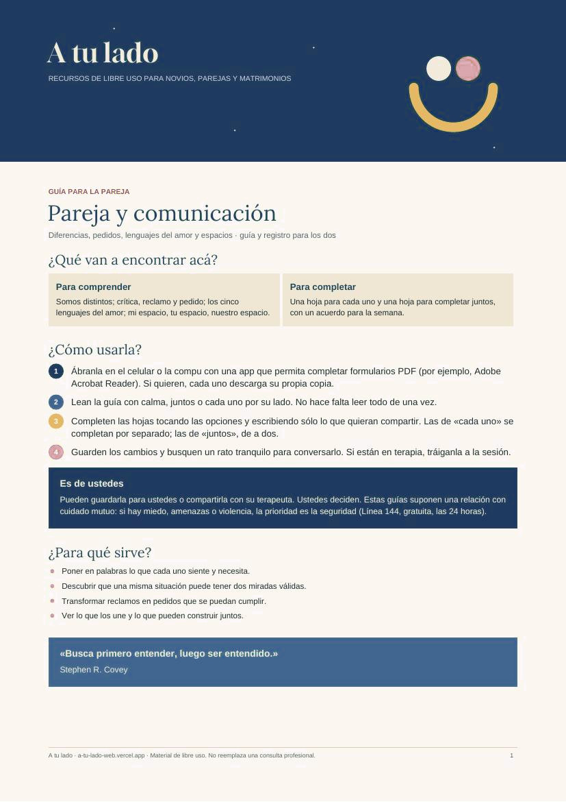
Guía para completar · 6 páginasDiferencias, crítica, reclamo y pedido, los cinco lenguajes del amor y los espacios. Una hoja para cada uno y una para los dos.
Ábranla en el celular o la compu con una app que permita completar formularios PDF, por ejemplo Adobe Acrobat Reader. Hay hojas para cada uno y hojas para completar juntos. Guarden los cambios y, si quieren, tráiganla a la sesión.
Siete maneras de amar y el triángulo de Sternberg: nuestro mapa del amor y los gestos de la semana.
Ábranla en el celular o la compu con una app que permita completar formularios PDF, por ejemplo Adobe Acrobat Reader. Hay hojas para cada uno y hojas para completar juntos. Guarden los cambios y, si quieren, tráiganla a la sesión.
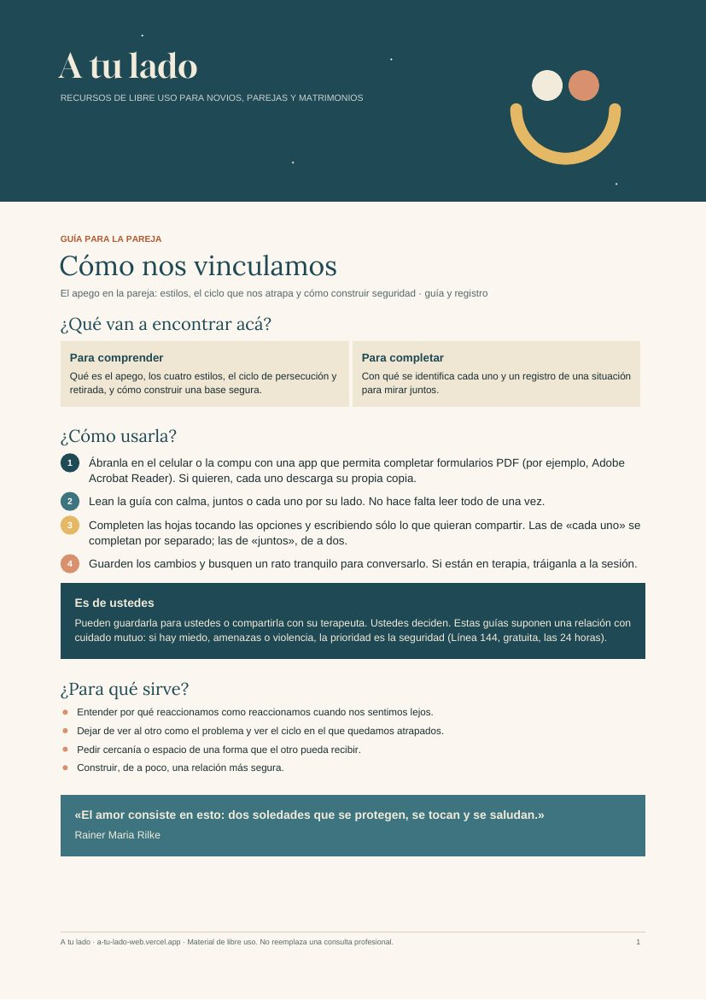
Guía para completar · 5 páginasEl apego en la pareja, el ciclo de persecución y retirada, y cómo construir una base segura.
Ábranla en el celular o la compu con una app que permita completar formularios PDF, por ejemplo Adobe Acrobat Reader. Hay hojas para cada uno y hojas para completar juntos. Guarden los cambios y, si quieren, tráiganla a la sesión.
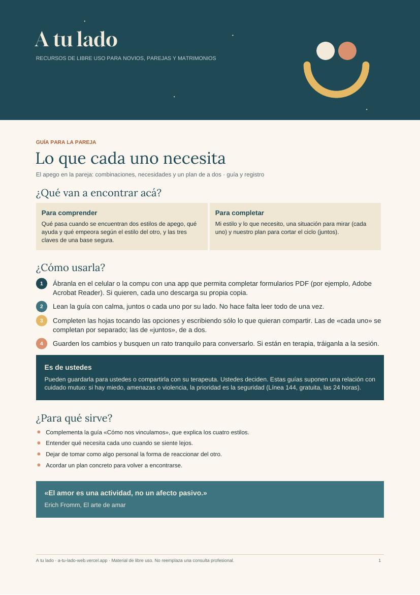
Guía para completar · 5 páginasEl apego en la pareja: cuando se encuentran dos estilos, qué ayuda y qué empeora, y un plan de a dos para cortar el ciclo.
Ábranla en el celular o la compu con una app que permita completar formularios PDF, por ejemplo Adobe Acrobat Reader. Hay hojas para cada uno y hojas para completar juntos. Guarden los cambios y, si quieren, tráiganla a la sesión.
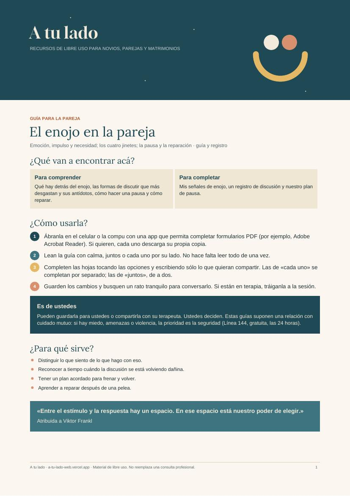
Guía para completar · 5 páginasEmoción, impulso y necesidad; los cuatro jinetes; la pausa y la reparación, con un plan de pausa para los dos.
Ábranla en el celular o la compu con una app que permita completar formularios PDF, por ejemplo Adobe Acrobat Reader. Hay hojas para cada uno y hojas para completar juntos. Guarden los cambios y, si quieren, tráiganla a la sesión.
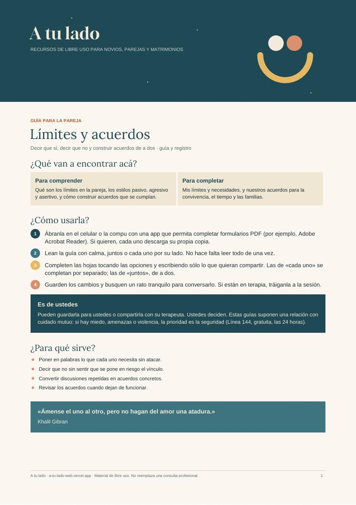
Guía para completar · 5 páginasDecir que sí, decir que no y construir acuerdos de a dos: estilos pasivo, agresivo y asertivo, y acuerdos que se cumplan.
Ábranla en el celular o la compu con una app que permita completar formularios PDF, por ejemplo Adobe Acrobat Reader. Hay hojas para cada uno y hojas para completar juntos. Guarden los cambios y, si quieren, tráiganla a la sesión.
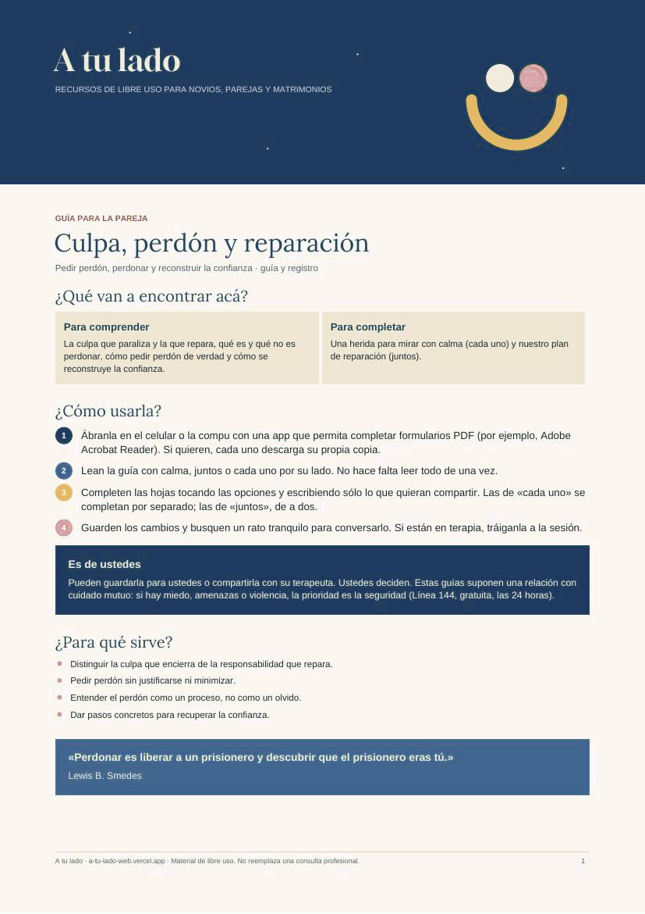
Guía para completar · 5 páginasLa culpa que encierra y la que repara, cómo pedir perdón de verdad y cómo reconstruir la confianza.
Ábranla en el celular o la compu con una app que permita completar formularios PDF, por ejemplo Adobe Acrobat Reader. Hay hojas para cada uno y hojas para completar juntos. Guarden los cambios y, si quieren, tráiganla a la sesión.
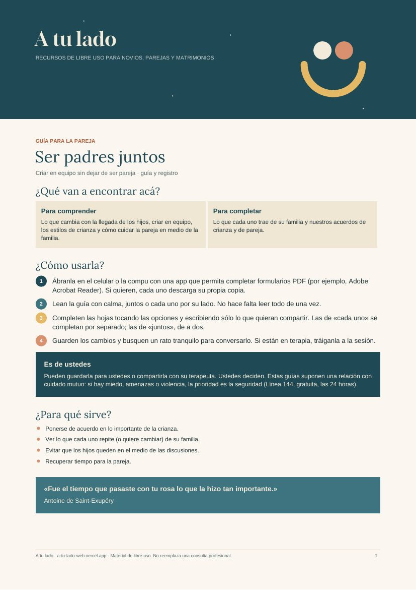
Guía para completar · 5 páginasCriar en equipo sin dejar de ser pareja: estilos de crianza, lo que trae cada uno de su familia y acuerdos de crianza.
Ábranla en el celular o la compu con una app que permita completar formularios PDF, por ejemplo Adobe Acrobat Reader. Hay hojas para cada uno y hojas para completar juntos. Guarden los cambios y, si quieren, tráiganla a la sesión.
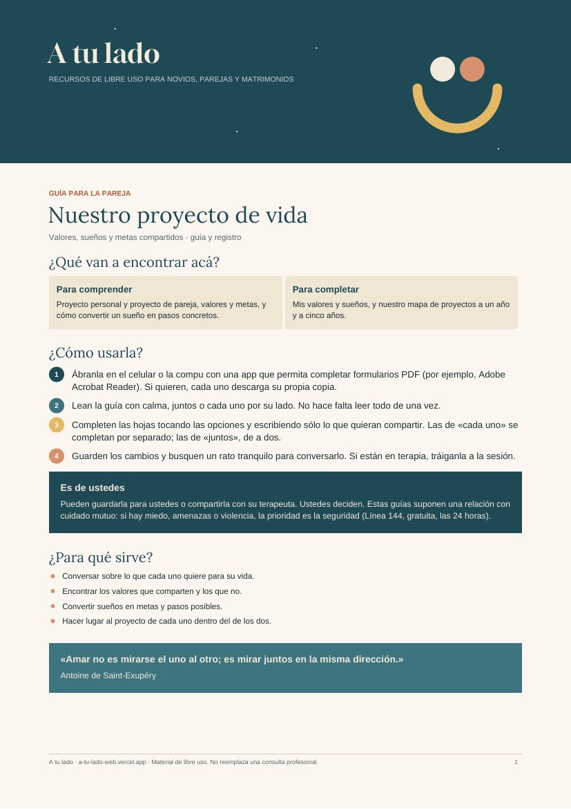
Guía para completar · 5 páginasMi proyecto, tu proyecto, nuestro proyecto: valores, sueños y metas compartidos, a un año y a cinco años.
Ábranla en el celular o la compu con una app que permita completar formularios PDF, por ejemplo Adobe Acrobat Reader. Hay hojas para cada uno y hojas para completar juntos. Guarden los cambios y, si quieren, tráiganla a la sesión.
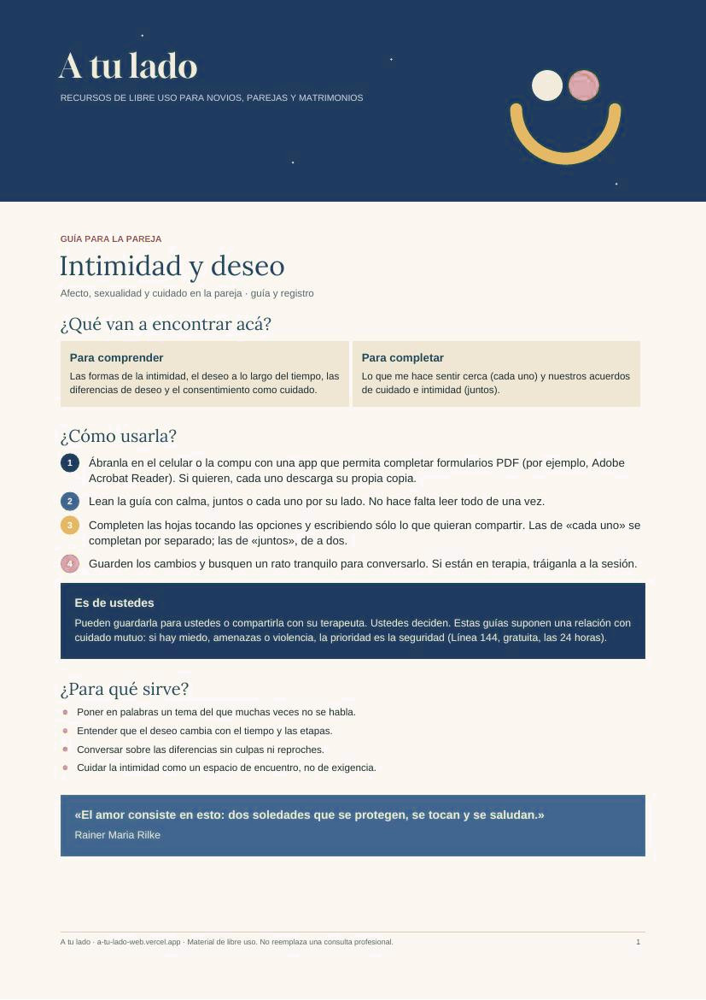
Guía para completar · 5 páginasAfecto, sexualidad y cuidado: las formas de la intimidad, el deseo a lo largo del tiempo, las diferencias y el consentimiento.
Ábranla en el celular o la compu con una app que permita completar formularios PDF, por ejemplo Adobe Acrobat Reader. Hay hojas para cada uno y hojas para completar juntos. Guarden los cambios y, si quieren, tráiganla a la sesión.
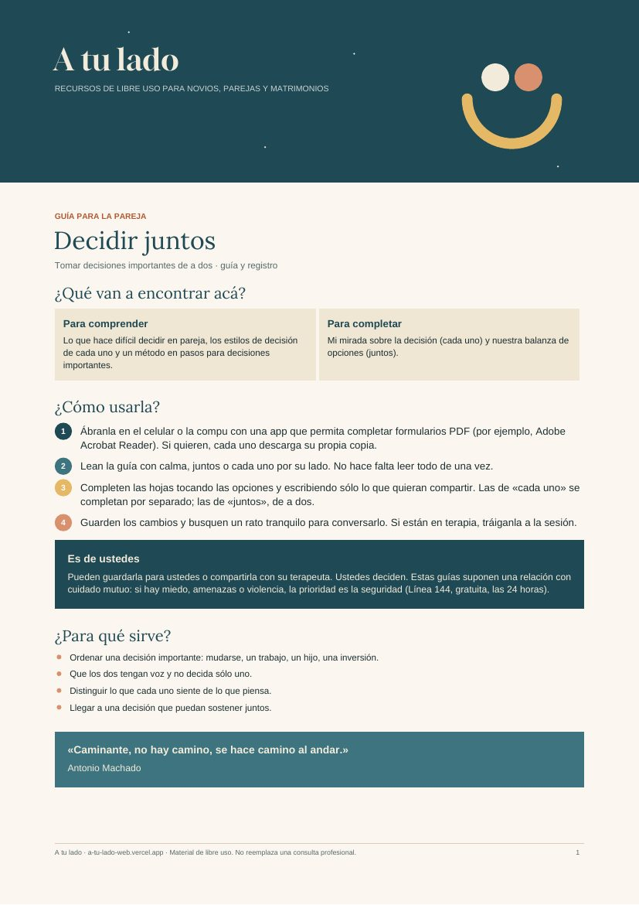
Guía para completar · 5 páginasDecisiones importantes de a dos: estilos de decisión, un método en pasos y una balanza de opciones.
Ábranla en el celular o la compu con una app que permita completar formularios PDF, por ejemplo Adobe Acrobat Reader. Hay hojas para cada uno y hojas para completar juntos. Guarden los cambios y, si quieren, tráiganla a la sesión.
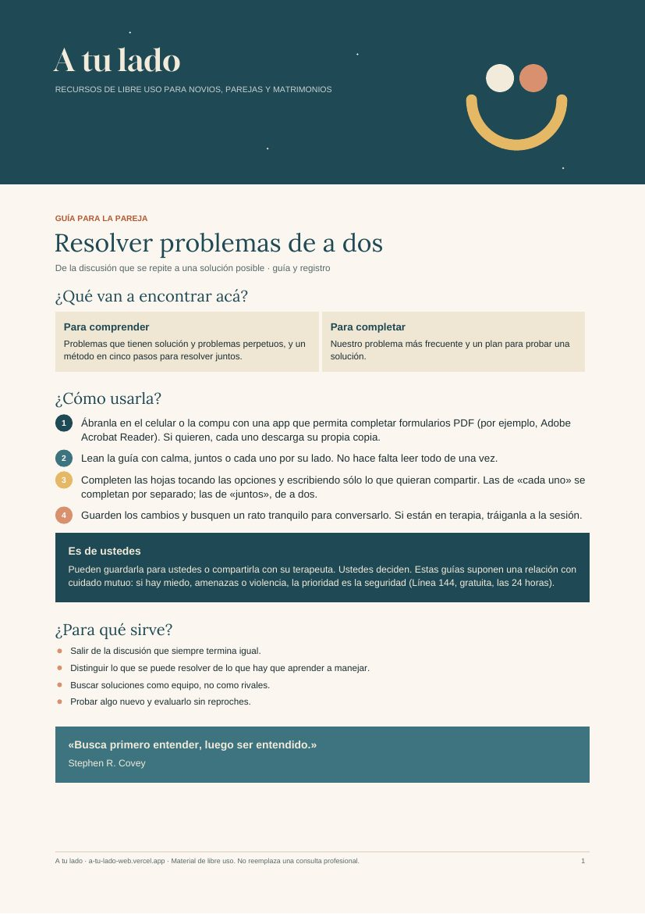
Guía para completar · 5 páginasProblemas con solución y problemas perpetuos, y cinco pasos para salir de la discusión que se repite.
Ábranla en el celular o la compu con una app que permita completar formularios PDF, por ejemplo Adobe Acrobat Reader. Hay hojas para cada uno y hojas para completar juntos. Guarden los cambios y, si quieren, tráiganla a la sesión.
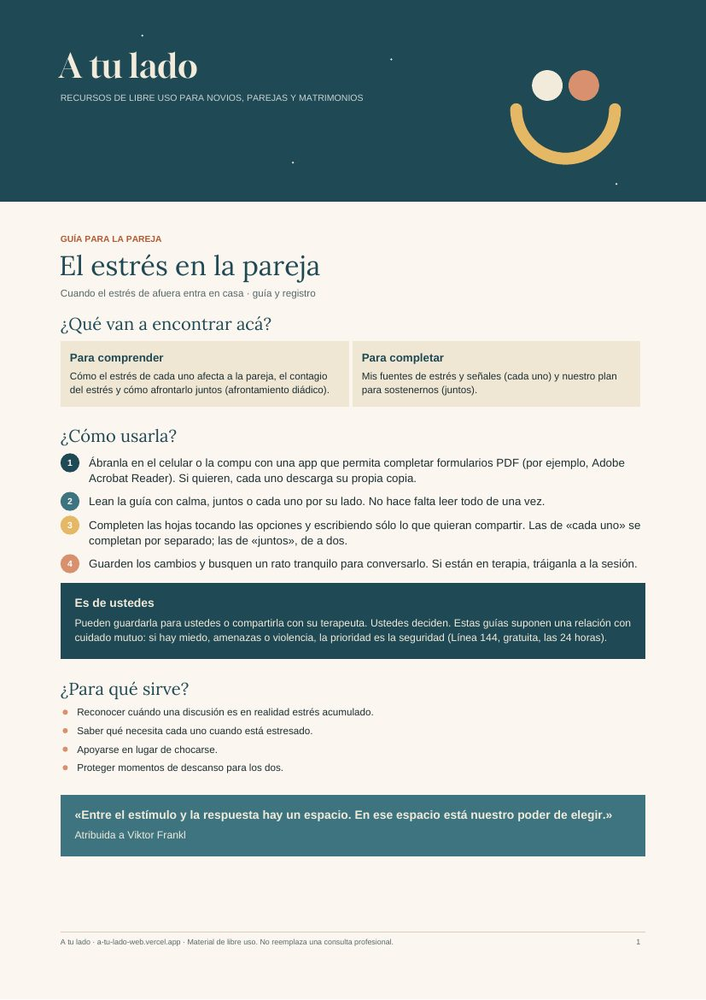
Guía para completar · 5 páginasCuando el estrés de afuera entra en casa: el contagio del estrés y cómo sostenerse en lugar de chocarse.
Ábranla en el celular o la compu con una app que permita completar formularios PDF, por ejemplo Adobe Acrobat Reader. Hay hojas para cada uno y hojas para completar juntos. Guarden los cambios y, si quieren, tráiganla a la sesión.
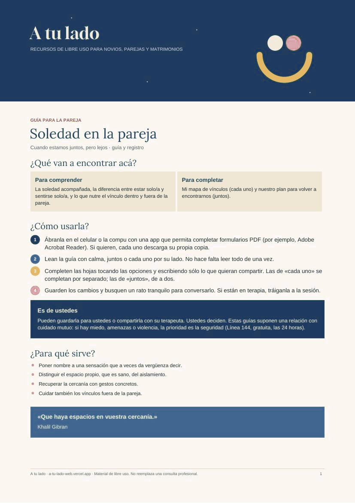
Guía para completar · 5 páginasCuando estamos juntos, pero lejos: estar solo/a y sentirse solo/a, y cómo volver a encontrarse.
Ábranla en el celular o la compu con una app que permita completar formularios PDF, por ejemplo Adobe Acrobat Reader. Hay hojas para cada uno y hojas para completar juntos. Guarden los cambios y, si quieren, tráiganla a la sesión.
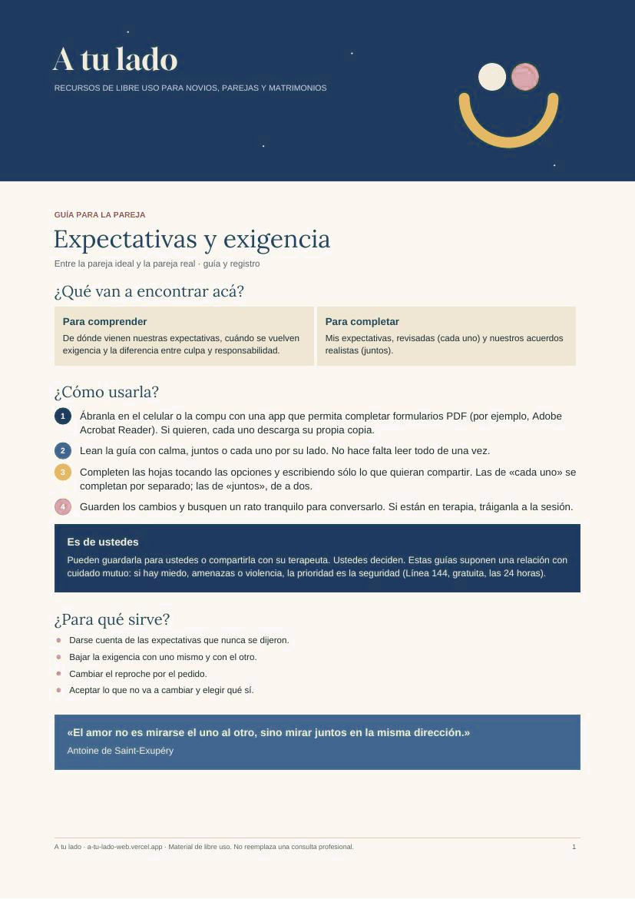
Guía para completar · 5 páginasEntre la pareja ideal y la real: expectativas no dichas, culpa y responsabilidad, y acuerdos realistas.
Ábranla en el celular o la compu con una app que permita completar formularios PDF, por ejemplo Adobe Acrobat Reader. Hay hojas para cada uno y hojas para completar juntos. Guarden los cambios y, si quieren, tráiganla a la sesión.
Para los momentos en que una discusión sube de tono: respirar, pedir una pausa y recordar que el problema está entre los dos, no en el otro. Guárdenla como fondo de pantalla o en la galería.
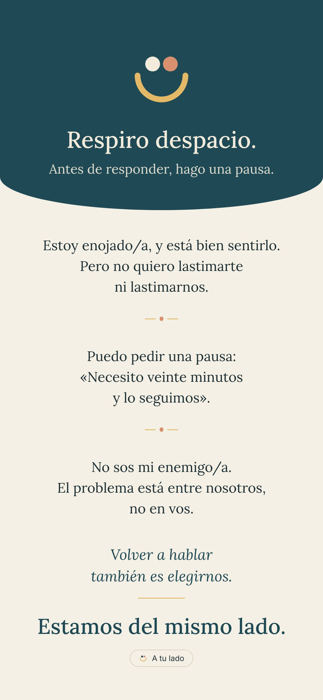
«Estoy enojado/a, y está bien sentirlo. Pero no quiero lastimarte ni lastimarnos. Puedo pedir una pausa. No sos mi enemigo/a. Volver a hablar también es elegirnos.»
Dinámicas
Propuestas para frenar un rato, mirarse y darle forma, con las manos, a lo que a veces cuesta poner en palabras. Cada lámina se completa de a dos: algunas cada uno por su lado y después se comparan, otras juntos desde el principio.
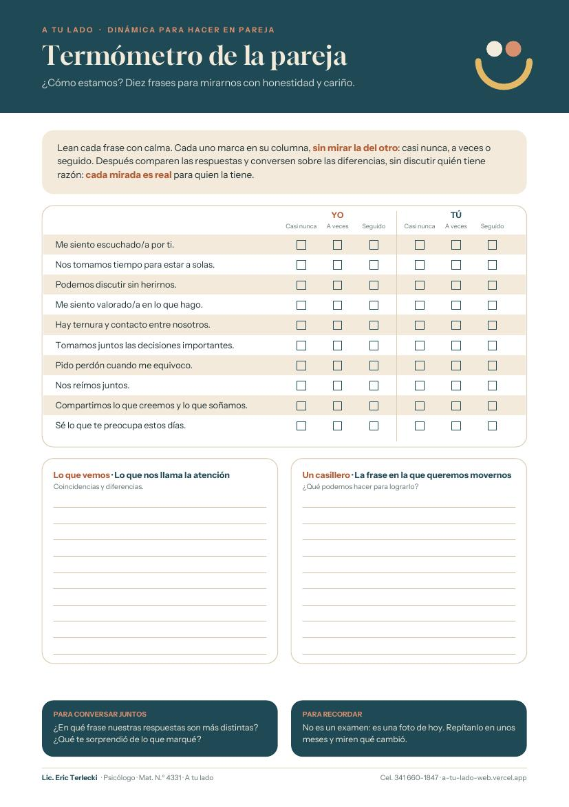
Nosotros hoy
Diez frases para mirar cómo estamos. Cada uno marca sin mirar al otro y después comparan.
No es un examen: es una foto de hoy.
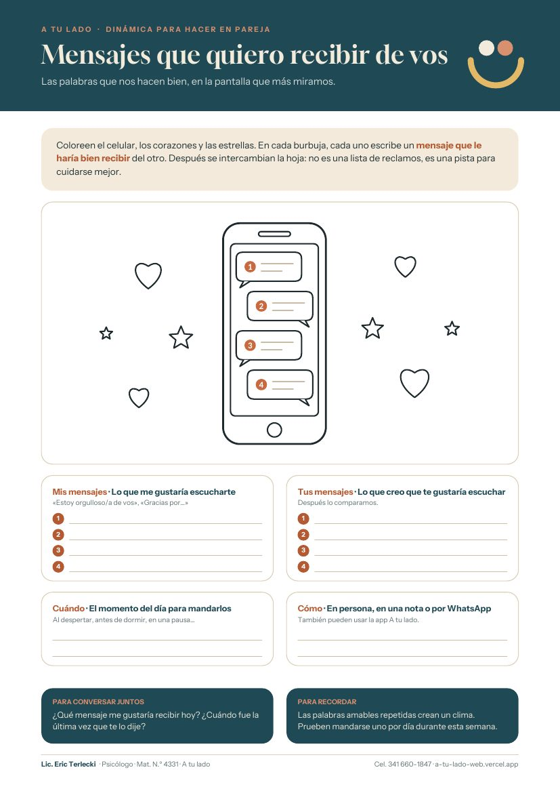
Nosotros hoy
Las palabras que nos hacen bien. Un celular para colorear con los mensajes que cada uno quiere recibir del otro.
¿Cómo me hablaría alguien que me quiere?
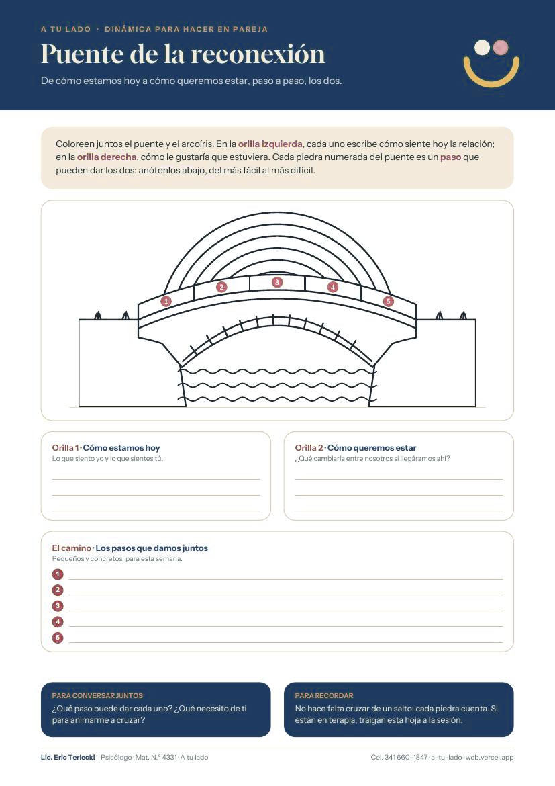
Nosotros hoy
De cómo estamos hoy a cómo queremos estar. Un puente para colorear juntos y cinco piedras para pensar el camino.
No hace falta cruzar de un salto: cada piedra cuenta.
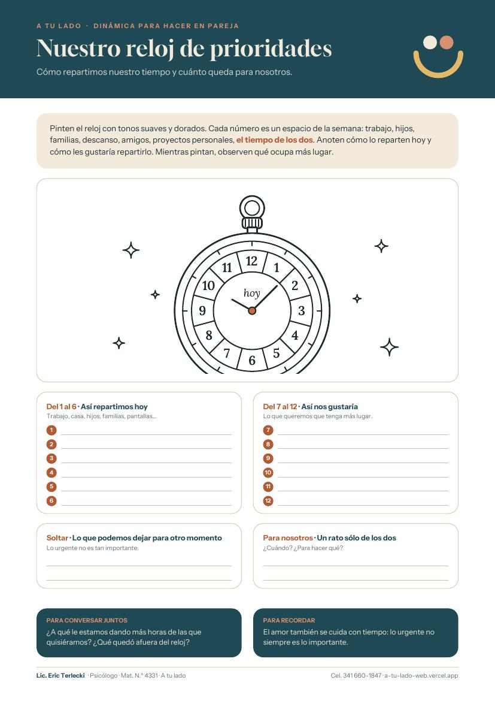
Nuestro tiempo y proyectos
Cómo repartimos el tiempo de la semana y cuánto queda para los dos. Un reloj para pintar y conversar.
¿Qué quedó afuera del reloj?
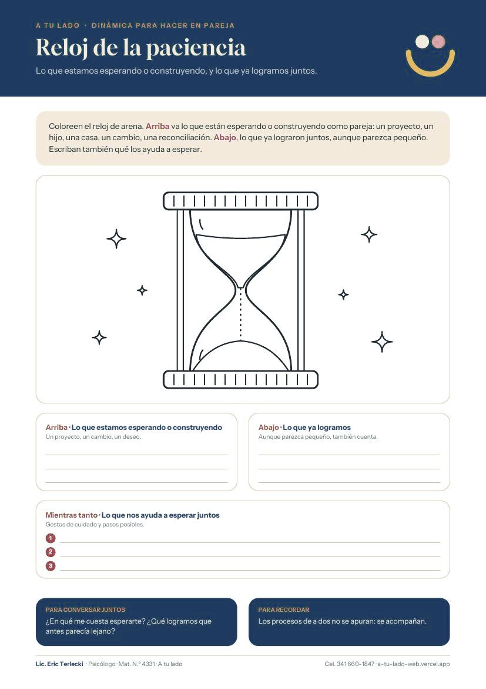
Nuestro tiempo y proyectos
Lo que estamos esperando o construyendo y lo que ya logramos. Un reloj de arena para honrar los procesos de a dos.
Los procesos de a dos no se apuran: se acompañan.
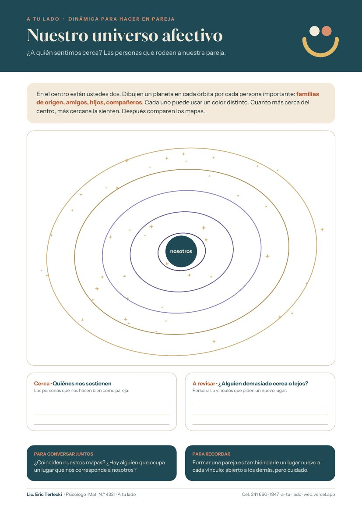
Nuestra historia y familias
Un mapa de órbitas para ubicar a las personas que rodean a la pareja: familias, amigos, hijos. ¿Coinciden nuestros mapas?
Una pareja necesita un espacio propio, abierto a los demás pero cuidado.
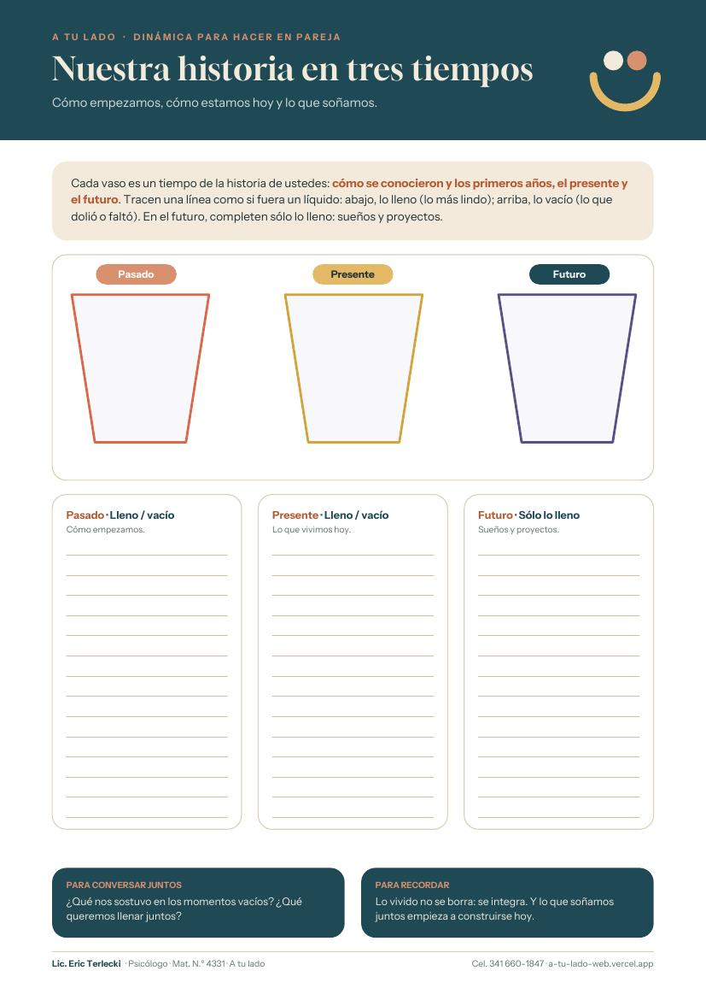
Nuestra historia y familias
Tres vasos para mirar el pasado, el presente y el futuro de la pareja: lo que nos llenó, lo que faltó y lo que soñamos.
Miren cada tiempo con cariño: también lo difícil los trajo hasta acá.
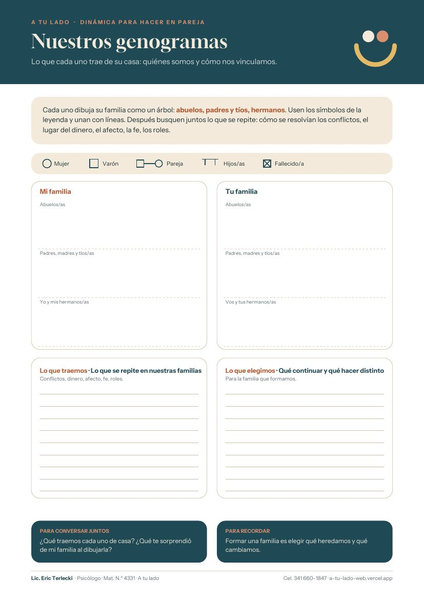
Nuestra historia y familias
Un dibujo de las dos familias de origen, generación por generación, para ver qué trae cada uno y qué se repite.
Formar una familia es elegir qué heredamos y qué cambiamos.
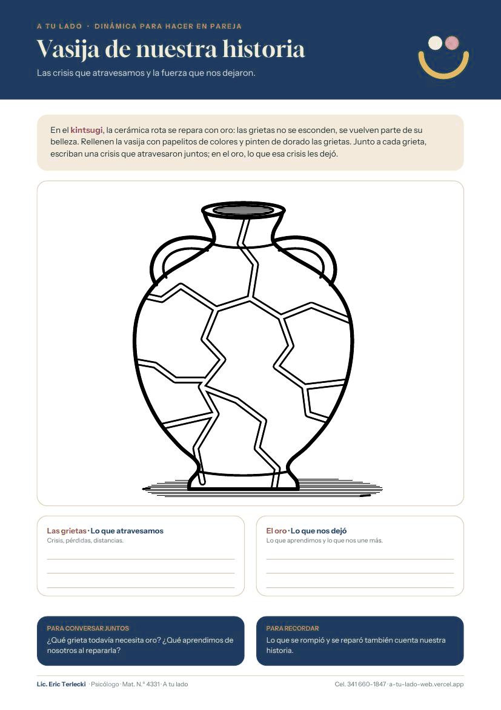
Nuestra historia y familias
Inspirada en el kintsugi: las grietas de la pareja, reparadas con oro. Las crisis que atravesamos y lo que nos dejaron.
Lo que se rompió y se reparó también cuenta nuestra historia.
Las dinámicas son recursos para la vida de pareja y no reemplazan una consulta profesional. Si alguna los moviliza más de lo esperado, frenen y háblenlo con alguien de confianza o en sesión. Si en la relación hay miedo o violencia, no son la herramienta adecuada: pidan ayuda (Línea 144).
Para pensar
Ideas breves para leer juntos, guardar o mandarse en un mensaje. Elijan una y conversen: ¿qué nos dice a nosotros, hoy?
«Amar no es mirarse el uno al otro; es mirar juntos en la misma dirección.»
— Antoine de Saint-Exupéry
«El amor es una actividad, no un afecto pasivo.»
— Erich Fromm
«El amor inmaduro dice: «Te amo porque te necesito». El amor maduro dice: «Te necesito porque te amo».»
— Erich Fromm
«El amor es la única manera de captar a otro ser humano en lo más profundo de su personalidad.»
— Viktor Frankl
«Toda vida verdadera es encuentro.»
— Martin Buber
«El amor consiste en esto: dos soledades que se protegen, se tocan y se saludan.»
— Rainer Maria Rilke
«Lo esencial es invisible a los ojos.»
— Antoine de Saint-Exupéry
«La conexión es la razón por la que estamos aquí.»
— Brené Brown
«Ver con los ojos de otro, escuchar con los oídos de otro, sentir con el corazón de otro.»
— Alfred Adler
«Las emociones son datos, no órdenes.»
— Susan David
«Busca primero entender, luego ser entendido.»
— Stephen R. Covey
«Entre el estímulo y la respuesta hay un espacio. En ese espacio está nuestro poder de elegir nuestra respuesta.»
— Atribuida a Viktor Frankl
«El perdón no es un acto ocasional, es una actitud permanente.»
— Atribuida a Martin Luther King Jr.
«Perdonar es liberar a un prisionero y descubrir que el prisionero eras tú.»
— Lewis B. Smedes
«Fue el tiempo que pasaste con tu rosa lo que la hizo tan importante.»
— Antoine de Saint-Exupéry
«Ten paciencia con todo lo que aún no está resuelto en tu corazón.»
— Rainer Maria Rilke
«Caminante, no hay camino, se hace camino al andar.»
— Antonio Machado
«La gratitud no es sólo la mayor de las virtudes, sino la madre de todas las demás.»
— Cicerón
«El amor es la preocupación activa por la vida y el crecimiento de lo que amamos.»
— Erich Fromm
«Eres responsable para siempre de lo que has domesticado.»
— Antoine de Saint-Exupéry
«Ámense el uno al otro, pero no hagan del amor una atadura.»
— Khalil Gibran
«Llénense uno al otro la copa, pero no beban de una sola copa.»
— Khalil Gibran
Lecturas
Una selección personal para acompañar el camino de la pareja, desde la mirada humanista, la perspectiva integrativa y la búsqueda de sentido. Las lecturas acompañan, pero no reemplazan, un proceso terapéutico.
Joan Garriga
Cuando uno y uno suman más que dos. Un clásico sobre lo que hace bueno a un amor: dejar que el otro sea como es, equilibrar el dar y el tomar y hacer lugar a la historia de cada uno.
Joan Garriga
La cara oculta del amor en la pareja y en la familia: los «fantasmas» del pasado, las lealtades a la familia de origen y las dinámicas de fondo que se juegan en el vínculo.
Erich Fromm
Un clásico: el amor no es algo que «nos pasa», sino un arte que se aprende, con cuidado, responsabilidad, respeto y conocimiento del otro.
Brené Brown
Sobre el coraje de mostrarse como uno es. Sin vulnerabilidad no hay intimidad posible.
John M. Gottman y Nan Silver
Lo que aprendió la investigación sobre las parejas que duran: el aprecio, los gestos de reparación y cómo discutir sin destruirse.
Amir Levine y Rachel Heller
Los estilos de apego en la pareja, con ejemplos claros para entender cómo nos vinculamos y por qué reaccionamos como reaccionamos.
Sue Johnson
Las conversaciones que reconectan a una pareja, desde la terapia focalizada en las emociones.
Gary Chapman
Palabras, tiempo, regalos, gestos de servicio y contacto: cada uno expresa y recibe el amor a su manera.
Esther Perel
Cómo cuidar el deseo en las relaciones largas, entre la seguridad y la novedad.
Walter Riso
Cómo amar sin perderse: la diferencia entre el apego que asfixia y el amor que deja crecer.
Khalil Gibran
Textos breves y poéticos sobre el amor, el matrimonio y los hijos, para leer en voz alta y conversar.
Rainer Maria Rilke
Cartas sobre la soledad, la paciencia y el amor como una tarea que se aprende.
App para los dos
Una aplicación sencilla para conversar más hondo en el día a día. Cada uno cuenta cómo llega, qué necesita y qué agradece del otro, y se lo envía por WhatsApp. El otro lo abre, lo lee con calma y responde: primero mostrando que entendió, después ofreciendo algo concreto. Una vez por semana, un encuentro más profundo para hablar de lo que los acercó, de lo que dolió y de lo que sueñan juntos.
1. Los dos la instalan en el celular. 2. Uno completa su mensaje y lo envía. 3. El otro toca el enlace, lo lee y responde. Lo escrito queda sólo en sus teléfonos: no pasa por ningún servidor.
Pensada para usar entre sesiones o por su cuenta, como un hábito de pareja.
Abrir la appQuién soy
Acompaño a personas, parejas y familias en psicoterapia clínica desde un enfoque humanista e integrativo.
En el consultorio veo todos los días cuánto pesa en la vida de una persona la calidad de sus vínculos más cercanos. Una pareja que se cuida es un lugar donde crecer; una pareja herida duele en todo lo demás.
«A tu lado» nace para acompañar a novios y matrimonios en ese camino: para conocerse, hablar, atravesar las crisis y volver a elegirse cada día.
También podés conocer Entre Nosotros, el espacio de psicoterapia general.
Preguntas frecuentes
Si tenés otra duda, escribime.
No. La app, los carruseles, las guías, las dinámicas y las demás descargas son gratuitos. No hay que pagar ni registrarse, y no hay publicidad.
Sí. Están pensados para usarlos en casa, de a dos. Si en algún momento sienten que necesitan más ayuda, pueden escribirme.
No hace falta esperar a una crisis grave. Pueden consultar novios que quieren prepararse para casarse, parejas que discuten siempre por lo mismo, o matrimonios que sienten distancia. Cuanto antes, más fácil es cambiar los patrones.
Lo ideal es que vengan juntos, pero no es obligatorio. A veces uno empieza solo y el otro se suma después. Lo que cambia en uno también cambia el vínculo.
No. Mi lugar no es decidir por ustedes ni tomar partido, sino ayudarlos a comprender lo que pasa y a decidir con más claridad y libertad.
Sí. Además del consultorio de Pasaje Rizzuto 3451, en Rosario, atiendo por Meet. También pueden conectarse cada uno desde un lugar distinto, si hace falta.
Es la primera de una serie de tres entrevistas iniciales. Ahí exploramos qué los trae, cómo ve cada uno la situación y qué esperan. Después definimos juntos las metas y el camino.
No trabajo con obras sociales. Para los honorarios, consultame por WhatsApp. Están disponibles todos los medios de pago.
Sí. Lo que conversamos está protegido por el secreto profesional.
Contacto
Escribime para coordinar una primera entrevista, para los dos o para uno. Respondo personalmente.
Servicios
Llamá a alguno de estos números o acercate a la guardia más cercana. Este espacio no atiende urgencias. Ante situaciones de violencia en la pareja, también podés llamar a la Línea 144, gratuita, las 24 horas.